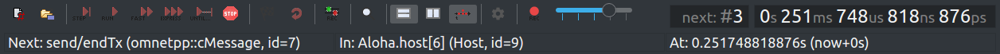
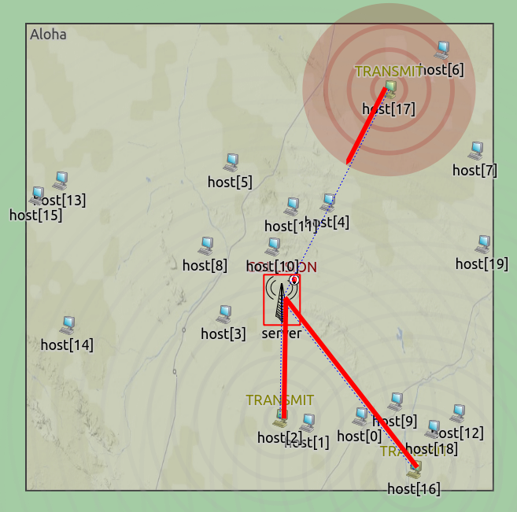
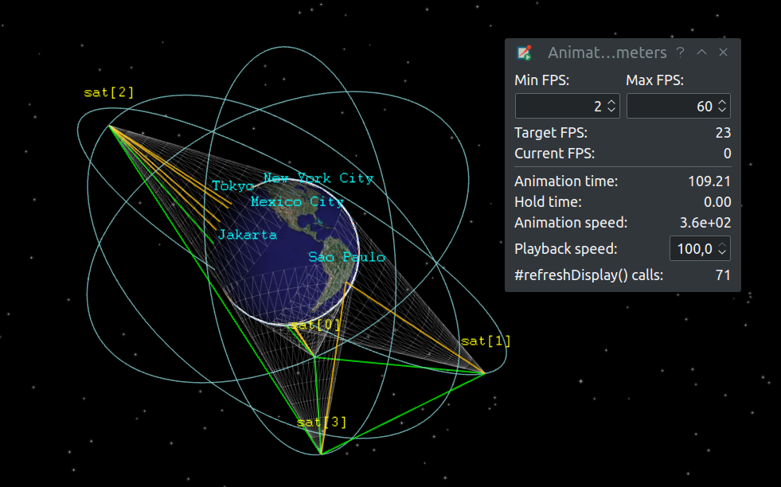
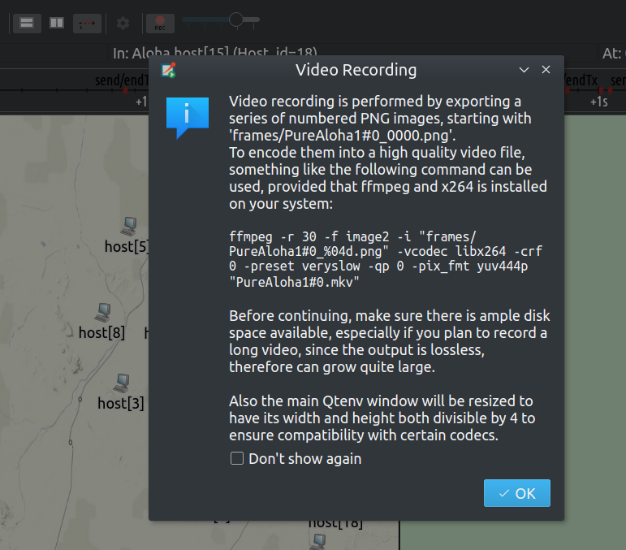
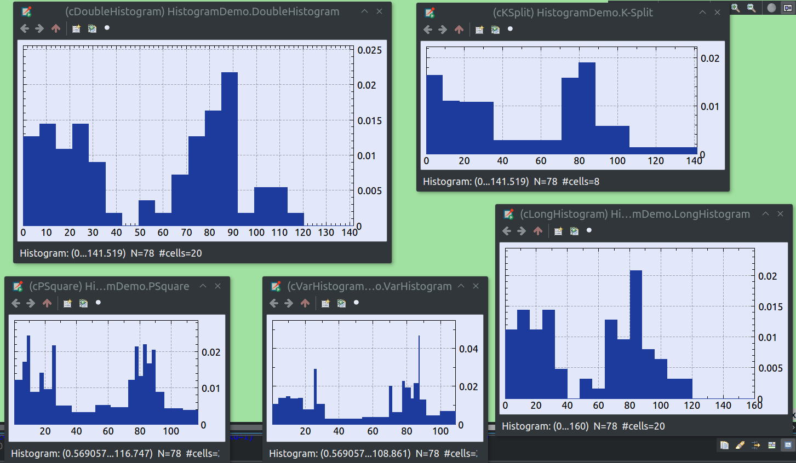
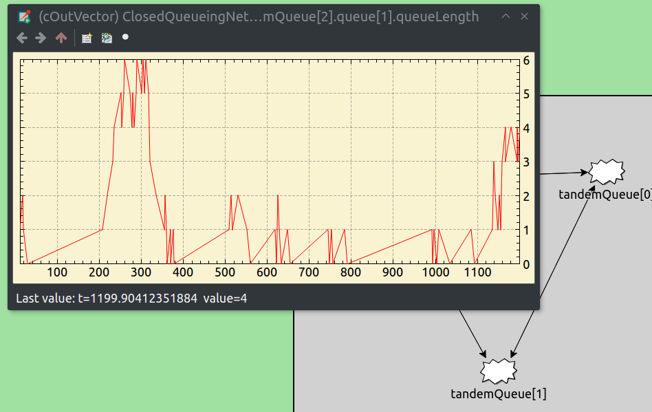

Updated Toolbar
The simulation time display now has digit grouping and units turned on by default for better readability. Settings can be changed in the context menu.
Packet Animation Support
Improvements on built-in animations: Messages sent with a nonzero propagation delay are now animated properly (not instantaneously). Packets of nonzero length are now displayed as "strips" when transmitted on a link with a transmission rate and propagation delay. The animation of method call hierarchies now represents the call graph better.

Smooth Animation API
Added support for smooth custom animations. This means that simulation time is interpolated between events, and the animation can be stopped between events. The updated 'aloha' example highlights the use of the new smooth animation API. The server and all hosts now have fixed positions (still random but deterministic, and not using auto-layouting), so that their individual propagation delays can be computed. Each transmitted packet is visualized with a ring and many concentric circles, illustrating the propagation of the electromagnetic wave. The visualization is faithful, e.g. multiple signals visually overlapping at a receiver actually means a collision.
Animation Parameters
A new 'Animation Parameters' window has been added where one can view the current animation speed, framerate, and other metrics.
Video Recording Support
Added built-in support to record animation into a high quality video. Press the record button on the toolbar for instructions.
Histogram Inspectors
Added graphical inspectors for histograms. They are enabled for any cStatistic-based histogram objects, i.e. they are currently not available for @statistic-based output histograms.
Vector Inspectors
Added graphical inspectors for output vectors.
